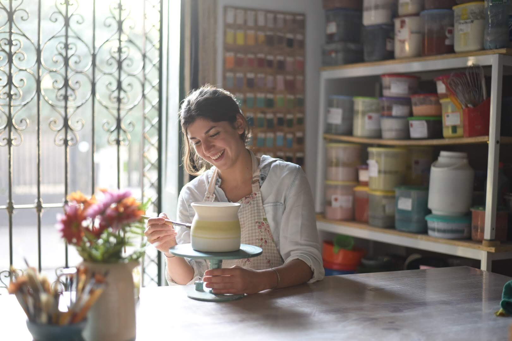
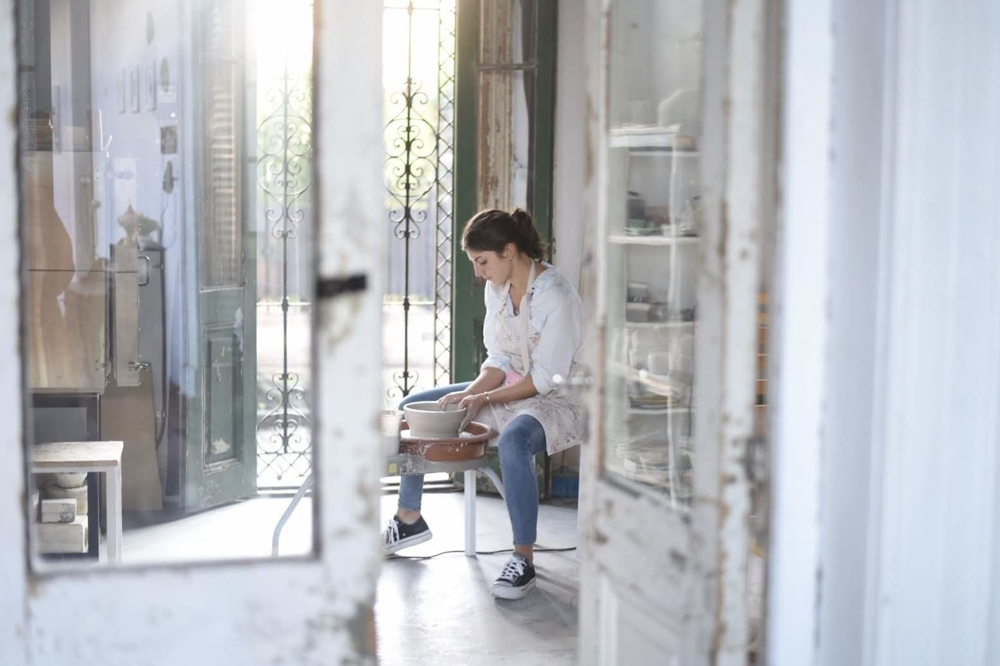

Somos un grupo de alfareras que contamos con un taller ubicado en el barrio de Palermo. Todas las piezas están realizadas en torno alfarero, con pasta de gres, y horneadas a media temperatura. Son aptas vajilla, horno y microondas. Se recomienda cuidarlas lavándolas a mano. Trabajamos con arcilla blanca de baja temperatura, 1040º, y con arcilla de gres tostado a 1200º. Nuestros esmaltes son elaborados por nosotros en el taller. Nuestra paleta es noble y natural. Buscamos que nustras piezas puedan abarcar la mayor cantidad de espacios. Por eso nos inclinamos mayormente a los colores neutros y pasteles. Nuestras formas son simples. Nos enfocamos en la funcionalidad de los objetos, tanto para su utilización como para su limpieza y guardado. También realizamos trabajos personalizados a pedido! Preguntanos y lo podemos charlar.
 